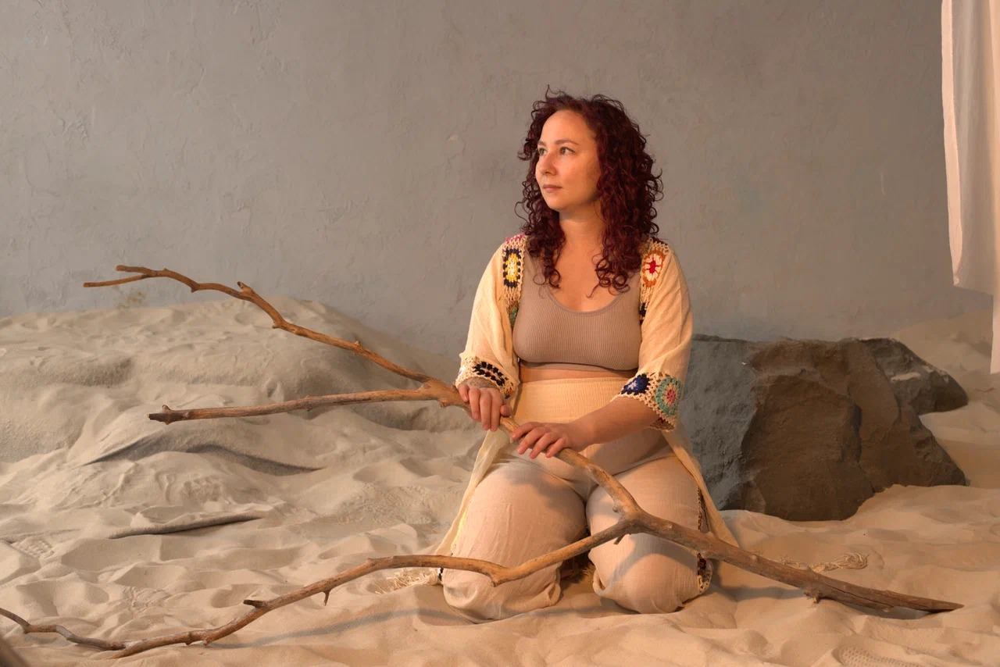
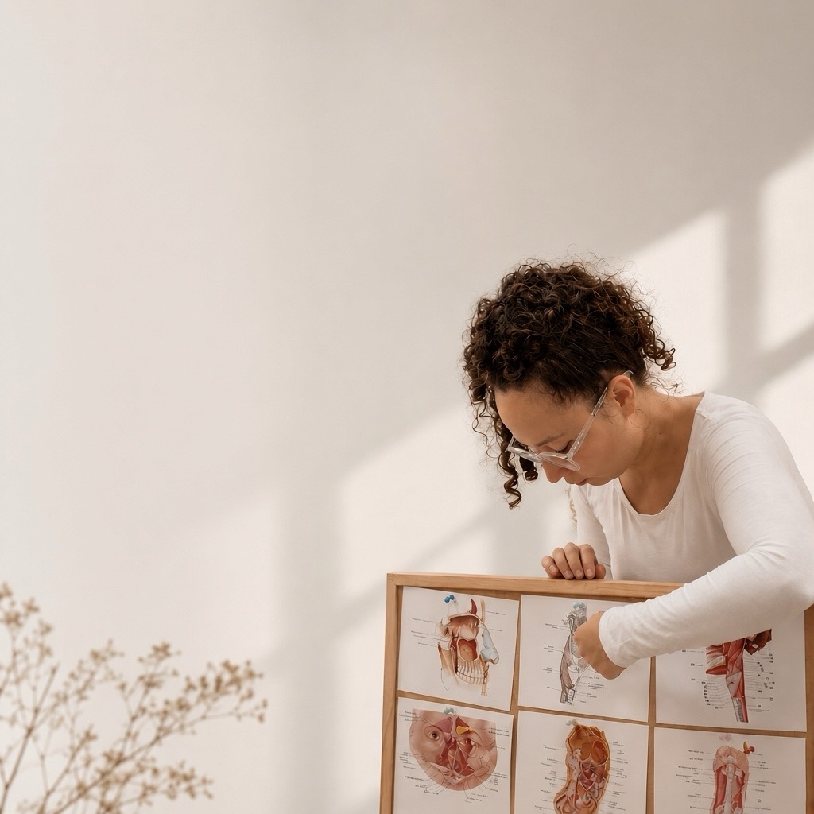
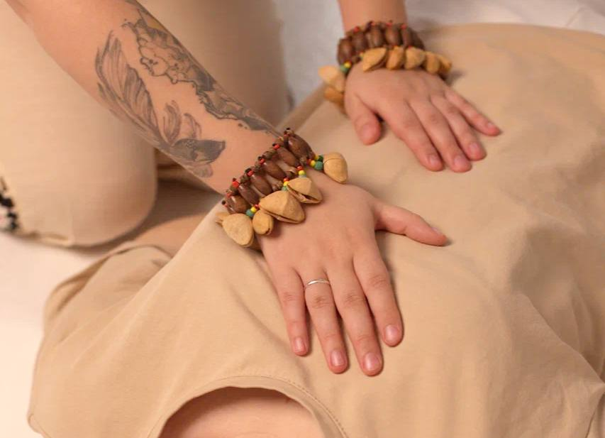

остеокоррекция · висцеральный массаж · телесные правки · самоправки
Ищу не отдельную «проблемную зону», а связи между структурами и функциями организма.

Системная телесная адаптация
О методе

Комплексная работа с телом: ищу не отдельную «проблемную зону», а связи между структурами и функциями организма.
Работаю руками — остеопатические и висцеральные техники, опорно-двигательная система, внутренние органы, диафрагмы, нервная система и ткани. При необходимости подключаю акупунктуру и индивидуально подобранные сборы трав. Часть работы передаю вам для самостоятельной практики дома (самоправки).
Задача — не просто убрать симптом, а понять, какие изменения в теле с ним связаны, и изменить общую работу организма.
Как начинается приём
Сеанс начинается со сбора анамнеза и диагностики. Разбираем режим дня, питание, работу пищеварения, стрессовые факторы, операции, роды, боли и жалобы.
Режим дня, питание, пищеварение, стресс, операции, роды, боли и жалобы.
Положение тела, подвижность позвоночника, объём движений, паттерны движения.
Работа основных нервов, органов и мышц. Ищем связи, а не только место симптома.
На приёме
Работаю руками с разными структурами. Техники выбираю под конкретного человека. Часть работы выполняем вместе на приёме, часть передаю для самостоятельной практики дома.

Остеопатические правки и работа с подвижностью
Снятие ограничений и восстановление скольжения тканей
Дыхание, объём и взаимосвязи
Висцеральные техники и работа со связями
Ткани, нервы и мягкие структуры
Техники для самостоятельной поддержки
Обучение
Приём
Самара · Москва · Санкт-Петербург
Консультации · Школа «Самоправки»
Очно: Самара · Москва · Санкт-Петербург
Онлайн: консультации и школа «Самоправки»
Бэлла Агишева · osteo_bella